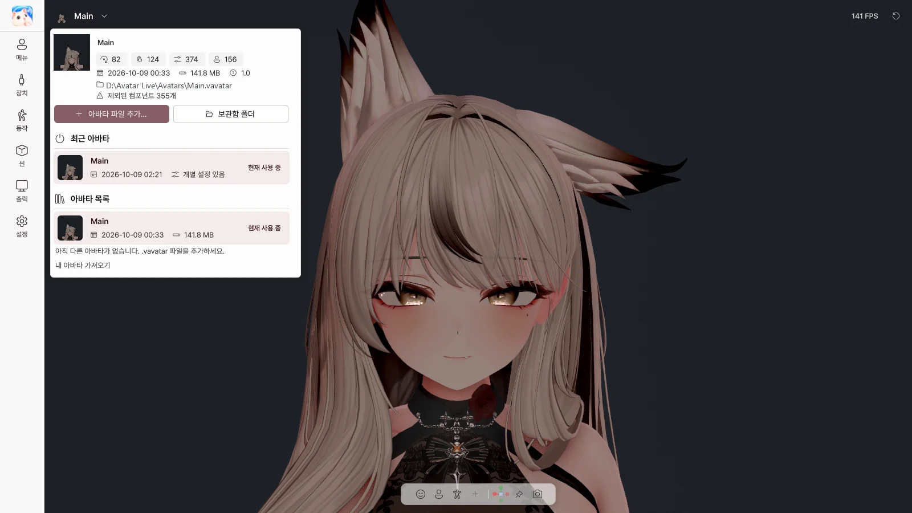

3. 시작 화면과 아바타 라이브러리#
시작 화면#

Avatar Live를 실행하면 시작 화면에서 아바타와 장치를 고른 뒤 시작합니다.
아바타#
| 항목 | 하는 일 |
|---|---|
| 아바타 열기… | .vavatar 파일 열기 (창에 끌어다 놓아도 됨) |
| 최근 / 폴더 / 가져옴 | 최근 연 아바타 / 아바타 폴더의 아바타 / 보관함으로 가져온 아바타 |
| 타일 클릭 · 더블클릭 | 선택 · 바로 시작 |
| 기본으로 지정 | 이 아바타를 기본 아바타로 |
| 파일 위치 | 탐색기에서 파일 보기 |
| 목록에서 제거 | 최근 목록에서만 지우기 (파일은 그대로) |
| 위치 찾기… | 옮겨진 파일 다시 지정 |
| 변경 / 폴더 열기 (폴더 탭) | 아바타 폴더 바꾸기 / 탐색기로 열기 |
상태 표시: 사용 가능 · 파일 없음 · 열 수 없음 · ★ 기본
장치와 시작 설정#
| 항목 | 하는 일 |
|---|---|
| 카메라 스위치 · 목록 | 시작할 때 웹캠 트래킹 켜기, 사용할 카메라 |
| 미리보기 | 카메라 화면 확인 (방송 중이면 다른 사람에게도 보이니 주의) |
| 마이크 스위치 · 목록 | 시작할 때 마이크(립싱크) 켜기, 사용할 마이크 |
| 테스트 | 마이크 소리가 들어오는지 확인 |
| 얼굴 | 얼굴 트래킹 엔진 (자동 / MediaPipe / OpenSeeFace) |
| 손 | 손 트래킹 (MediaPipe / Ultraleap / 끔) |
| 시작 아바타 | 매번 묻기 / 마지막 아바타 / 기본 아바타 |
| 항상 시작 화면 보이기 | 매번 이 화면에서 시작 |
| ▶ Avatar Live 시작 | 고른 아바타로 시작 |
안전 시작#
웹캠·마이크·트래커 없이 시작합니다. 장치 문제로 시작이 안 될 때 씁니다. Shift를 누른 채 실행하고 시작 화면이 뜰 때까지 누르고 있으세요.
복구 화면#
지난번 아바타를 불러오는 중에 꺼졌다면 다음 실행 때 나타납니다.
| 버튼 | 하는 일 |
|---|---|
| 다시 시도 | 같은 아바타 다시 불러오기 |
| 다른 아바타 고르기 | 시작 화면으로 |
| 안전 시작 | 장치 없이 같은 아바타 불러오기 |
실행 중에 아바타 바꾸기#

왼쪽 위 아바타 이름을 누르면 아바타 라이브러리가 열립니다.
| 항목 | 하는 일 |
|---|---|
| 아바타 정보 | PhysBone · Contact · 표정 파라미터 · 메뉴 항목 수, 날짜, 크기 |
| 아바타 파일 추가… | .vavatar를 보관함으로 가져오기 |
| 보관함 폴더 | 보관함 폴더 열기 |
| 최근 아바타 | 최근 연 아바타로 전환 |
| 아바타 목록 | 보관함의 아바타로 전환, 🗑 삭제 (설정은 남음) |
| 내 아바타 가져오기 | Exporter 사용법 안내 |
아바타를 바꾸면 설정을 저장하고 새 아바타로 다시 시작합니다. 켜 둔 웹캠과 마이크는 그대로 다시 켜집니다.
시작 화면으로 돌아가기#
- 왼쪽 위 로고 → 다시 시작
- 설정 › 시작 › 다시 시작